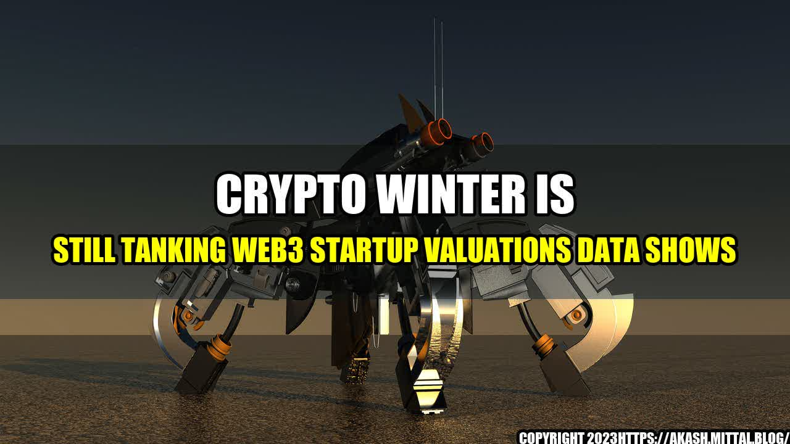

Crypto Winter Is Still Tanking Web3 Startup Valuations Data Shows

It was a night like any other when Ethan, a full-time software developer and part-time investor, received an email that changed everything.
The email was from a startup he had invested in two years ago, during the peak of the crypto craze. The startup was working on a decentralized social network, powered by blockchain technology, that promised to disrupt the likes of Facebook and Twitter.
Ethan had put in $50,000 in exchange for equity, hoping to ride the wave of the blockchain revolution. Now, the email was informing him that the startup had failed to raise its next funding round and was close to running out of cash.
Unfortunately, Ethan's story is not unique. According to recent data, Web3 startup valuations have been hit hard by the crypto winter, and many investors are feeling the pain.
Let's take a look at some numbers to understand the magnitude of the problem:
- The average valuation of Web3 startups has decreased by 55% since January 2018.
- Web3 startups raised $3.1 billion in funding during 2018, a sharp decline from the $5.5 billion raised in 2017.
- More than 50% of all blockchain-related startups have failed within four months of their ICO, according to a recent study by the Boston College Carroll School of Management.
- Several high-profile Web3 startups, such as Civil and SpankChain, have had to lay off staff or pivot their business models due to lack of funding.
The crypto winter is still here, and Web3 startups are feeling the heat
Conclusion
- Be wary of hype: Investing in Web3 startups can be tempting, especially when you see the potential for disruption and financial gain. However, it's important to separate the hype from the reality and do your due diligence before investing.
- Focus on fundamentals: While blockchain technology has the potential to create amazing new products and services, it's important to remember that startups still need solid fundamentals to succeed. This includes a clear value proposition, a strong team, a viable market, and a solid business model.
- Don't give up: The crypto winter may be tough for startups and investors alike, but it's important to remember that crypto and blockchain technology are still in their infancy. History has shown that many successful companies were born out of tough times, and there's no reason to believe that won't be the case again.
References:
Hashtags:
- #cryptowinter
- #Web3
- #startupvaluations
- #blockchain
- #investing
Article Category:
Finance/Technology
Curated by Team Akash.Mittal.Blog
Share on Twitter Share on LinkedIn